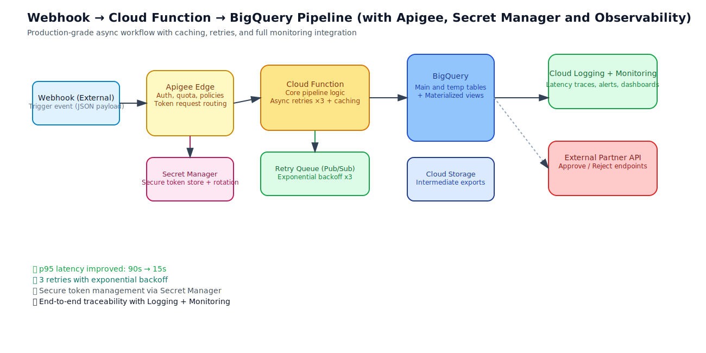
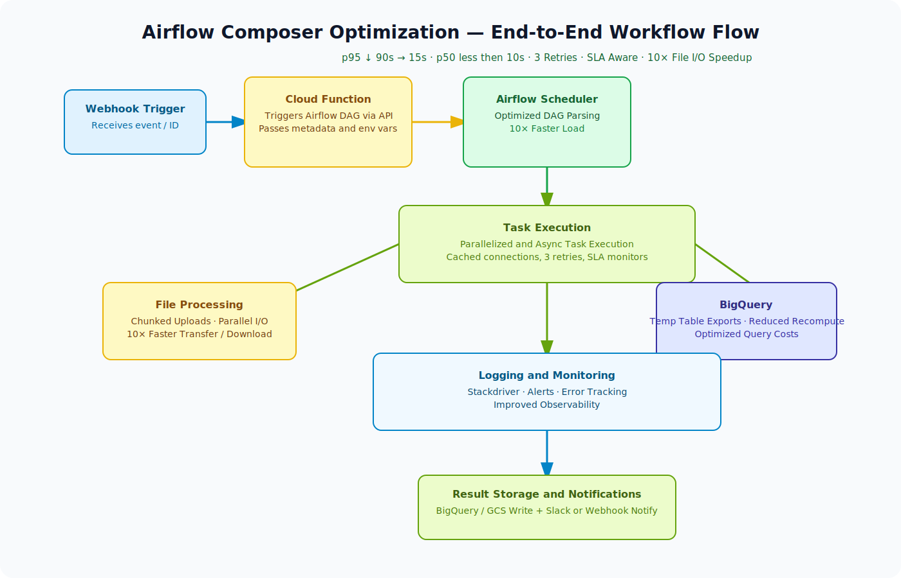
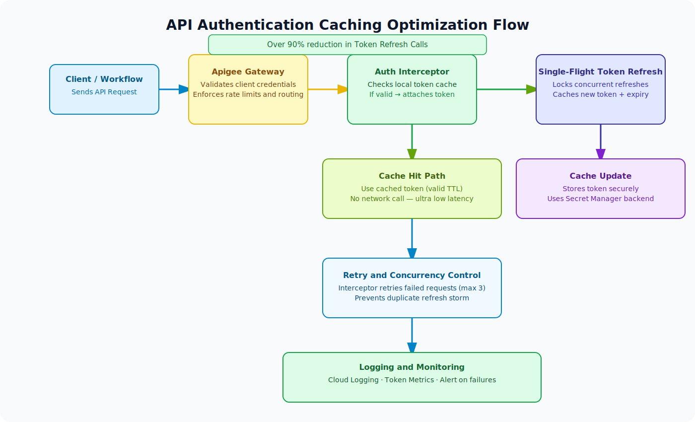
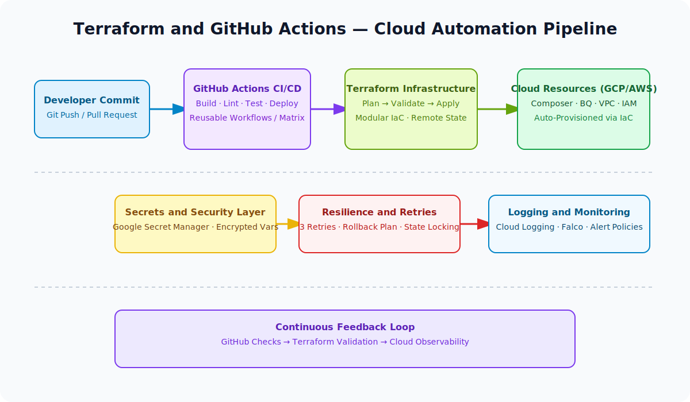

Cloud Data Engineer — Deutsche Bank
2024 – Present · India
- Optimized cloud composer, 10x faster file transfer/downloads with higher reliability under variable networks.
- Optimized API authentication by caching access tokens with expiry, implementing single-flight refresh and interceptor-based retries, eliminating redundant refreshes and stabilizing concurrency while reducing auth calls by >90%.
- Faster, cheaper BigQuery-to-file exports by exploiting default temp tables and minimizing recompute.
- Optimized webhook pipeline, p95 reduced from ~90 seconds to ~15 seconds, p50 under 10 seconds, with resilient async design.
- Architected scalable and resilient data pipelines leveraging GCP services.
- Managed real-time and batch pipelines for efficient handling and near real-time insights.
- Orchestrated complex workflows with Airflow; optimized end-to-end processing.
- Automated ETL with Python (pandas, paramiko, PGP, requests), reducing manual effort.
- Optimized SQL for large datasets in BigQuery.
- Implemented Terraform and GitHub Actions for robust Composer DAG management.
- Ran POCs for ETL/ELT across on-prem and GCP.
Key Technical Impact
⚡ Async Webhook Pipeline
Reduced p95 latency from ~90s to 15s via async Cloud Function design, parallelized API calls, and BigQuery integration with resilient error handling.
🚀 Airflow Composer Optimization
Achieved 10× faster file transfer and download performance by parallelizing Airflow Composer's file handling and enabling resumable uploads for unstable networks.
🔐 API Authentication Caching
Reduced authentication calls by 90% using token caching, single-flight refresh logic, and interceptor-based retries. Stabilized concurrent requests and improved pipeline throughput.
🧱 Terraform & GitHub Actions
Automated deployments for Airflow DAGs, Cloud Functions, GCS, and GSM resources via Terraform and GitHub Actions CI/CD pipelines. Improved release reliability and reduced manual ops time.
